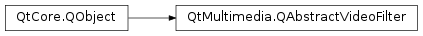

QAbstractVideoFilter¶
Detailed Description¶
The
PySide2.QtMultimedia.QAbstractVideoFilterclass represents a filter that is applied to the video frames received by a VideoOutput type.
PySide2.QtMultimedia.QAbstractVideoFilterprovides a convenient way for applications to run image processing, computer vision algorithms or any generic transformation or calculation on the output of a VideoOutput type, regardless of the source (video or camera). By providing a simple interface it allows applications and third parties to easily develop QML types that provide image processing algorithms using popular frameworks like OpenCV. Due to the close integration with the final stages of the Qt Multimedia video pipeline, accelerated and possibly zero-copy solutions are feasible too: for instance, a plugin providing OpenCL-based algorithms can use OpenCL’s OpenGL interop to use the OpenGL textures created by a hardware accelerated video decoder, without additional readbacks and copies.Note
PySide2.QtMultimedia.QAbstractVideoFilteris not always the best choice. To apply effects or transformations using OpenGL shaders to the image shown on screen, the standard Qt Quick approach of using ShaderEffect items in combination with VideoOutput should be used. VideoFilter is not a replacement for this. It is rather targeted for performing computations (that do not necessarily change the image shown on screen) and computer vision algorithms provided by external frameworks.
PySide2.QtMultimedia.QAbstractVideoFilteris meant to be subclassed. The subclasses are then registered to the QML engine, so they can be used as a QML type. The list of filters are assigned to a VideoOutput type via its filters property.A single filter represents one transformation or processing step on a video frame. The output is a modified video frame, some arbitrary data or both. For example, image transformations will result in a different image, whereas an algorithm for detecting objects on an image will likely provide a list of rectangles.
Arbitrary data can be represented as properties on the
PySide2.QtMultimedia.QAbstractVideoFiltersubclass and on thePySide2.QtCore.QObjector QJSValue instances passed to its signals. What exactly these properties and signals are, is up to the individual video filters. Completion of the operations can be indicated by signals. Computations that do not result in a modified image will pass the input image through so that subsequent filters can be placed after them.Properties set on
PySide2.QtMultimedia.QAbstractVideoFilterserve as input to the computation, similarly to how uniform values are specified in ShaderEffect types. The changed property values are taken into use when the next video frame is processed.The typical usage is to subclass
PySide2.QtMultimedia.QAbstractVideoFilterandPySide2.QtMultimedia.QVideoFilterRunnable:class MyFilterRunnable : public QVideoFilterRunnable { public: QVideoFrame run(QVideoFrame *input, const QVideoSurfaceFormat &surfaceFormat, RunFlags flags) { ... } }; class MyFilter : public QAbstractVideoFilter { public: QVideoFilterRunnable *createFilterRunnable() { return new MyFilterRunnable; } signals: void finished(QObject *result); }; int main(int argc, char **argv) { ... qmlRegisterType<MyFilter>("my.uri", 1, 0, "MyFilter"); ... }MyFilter is thus accessible from QML:
import my.uri 1.0 Camera { id: camera } MyFilter { id: filter // set properties, they can also be animated onFinished: console.log("results of the computation: " + result) } VideoOutput { source: camera filters: [ filter ] anchors.fill: parent }This also allows providing filters in QML plugins, separately from the application.
See also
VideoOutput Camera MediaPlayer
PySide2.QtMultimedia.QVideoFilterRunnable
-
class
PySide2.QtMultimedia.QAbstractVideoFilter([parent=nullptr])¶ Parameters: parent – PySide2.QtCore.QObjectConstructs a new
PySide2.QtMultimedia.QAbstractVideoFilterinstance with parent objectparent.
-
PySide2.QtMultimedia.QAbstractVideoFilter.activeChanged()¶
-
PySide2.QtMultimedia.QAbstractVideoFilter.createFilterRunnable()¶ Return type: PySide2.QtMultimedia.QVideoFilterRunnableFactory function to create a new instance of a
PySide2.QtMultimedia.QVideoFilterRunnablesubclass corresponding to this filter.This function is called on the thread on which the Qt Quick scene graph performs rendering, with the OpenGL context bound. Ownership of the returned instance is transferred: the returned instance will live on the render thread and will be destroyed automatically when necessary.
Typically, implementations of the function will simply construct a new
PySide2.QtMultimedia.QVideoFilterRunnableinstance, passingthisto the constructor as the filter runnables must know their associatedPySide2.QtMultimedia.QAbstractVideoFilterinstance to access dynamic properties and optionally emit signals.
-
PySide2.QtMultimedia.QAbstractVideoFilter.isActive()¶ Return type: PySide2.QtCore.bool
-
PySide2.QtMultimedia.QAbstractVideoFilter.setActive(v)¶ Parameters: v – PySide2.QtCore.bool
© 2018 The Qt Company Ltd. Documentation contributions included herein are the copyrights of their respective owners. The documentation provided herein is licensed under the terms of the GNU Free Documentation License version 1.3 as published by the Free Software Foundation. Qt and respective logos are trademarks of The Qt Company Ltd. in Finland and/or other countries worldwide. All other trademarks are property of their respective owners.